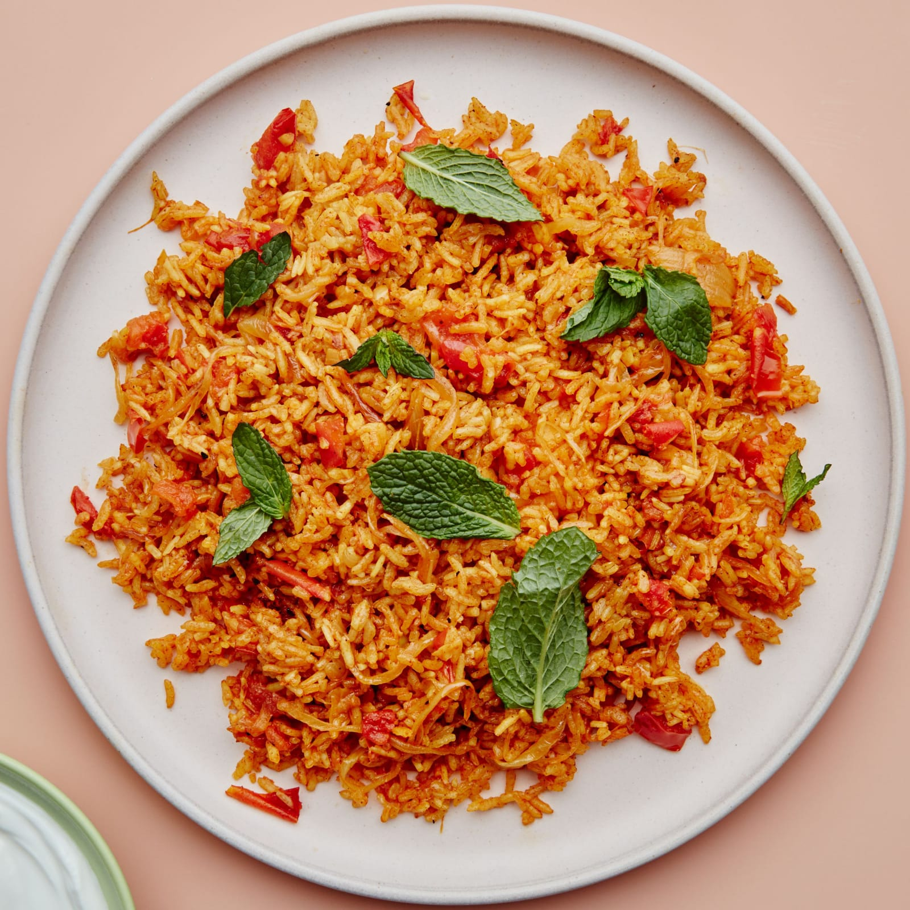

Tomato Rice
⭐⭐⭐⭐☆ 4.5 Rating | ⏱ 30 Minutes | 🍽 4 Servings
Category
Lunch
Difficulty
Easy
Calories
280 kcal
Cooking Style
One-Pot Meal
📋 Ingredients
- 2 Cups Cooked Rice
- 3 Tomatoes (Finely Chopped)
- 1 Onion (Sliced)
- 2 Green Chillies
- 1 tsp Ginger-Garlic Paste
- 1 tsp Mustard Seeds
- 1 tsp Cumin Seeds
- 8 Curry Leaves
- ½ tsp Turmeric Powder
- 1 tsp Red Chilli Powder
- 1 tsp Garam Masala
- 2 tbsp Oil
- Salt to Taste
- Fresh Coriander Leaves
🍳 Required Utensils
- Frying Pan
- Cooking Spoon
- Knife
- Cutting Board
- Serving Bowl
📖 Introduction
Tomato Rice is a flavorful South Indian rice dish prepared with cooked rice, tomatoes, aromatic spices, and herbs. It is a quick and delicious meal that is perfect for lunch boxes and family meals.
🔬 Principle
Fresh tomatoes are cooked with spices until soft and blended into a rich masala. Cooked rice is then mixed gently to absorb the flavors without breaking the grains.
👨🍳 Procedure
- Heat oil in a frying pan.
- Add mustard seeds and cumin seeds.
- Add curry leaves and green chillies.
- Add sliced onions and sauté until golden.
- Add ginger-garlic paste and cook for 1 minute.
- Add chopped tomatoes.
- Cook until tomatoes become soft.
- Add turmeric, chilli powder, garam masala and salt.
- Cook until oil separates from the masala.
- Add cooked rice.
- Mix gently without breaking the rice.
- Cook for 3–5 minutes on low flame.
- Garnish with fresh coriander leaves.
- Serve hot.
⚠ Precautions
- Use fully cooked rice.
- Do not overcook the tomatoes.
- Mix rice gently.
- Adjust spice level according to taste.
- Serve immediately for best flavor.
💡 Chef Tips
- Add roasted peanuts or cashews for crunch.
- Use basmati rice for extra aroma.
- Add a little lemon juice before serving.
- Garnish with coriander for freshness.
🥗 Nutrition Facts
| Nutrient | Amount |
|---|---|
| Calories | 280 kcal |
| Protein | 6 g |
| Carbohydrates | 48 g |
| Fat | 8 g |
🍽 Serving Suggestions
- Raita
- Papad
- Pickle
- Curd
- Potato Fry
🌿 Health Benefits
- Tomatoes are rich in Vitamin C.
- Contains antioxidants like lycopene.
- Rice provides energy.
- Easy to digest.
- Suitable for lunch and dinner.
✅ Result
The prepared Tomato Rice should be soft, flavorful, slightly tangy, and aromatic. Every grain of rice should be coated with spicy tomato masala, making it a delicious and satisfying meal.
🎥 Watch Recipe Video
Learn the complete recipe by watching the step-by-step video.
▶ Watch on YouTube